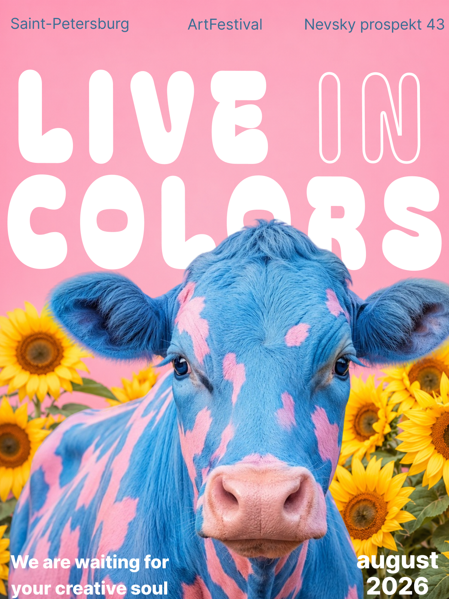
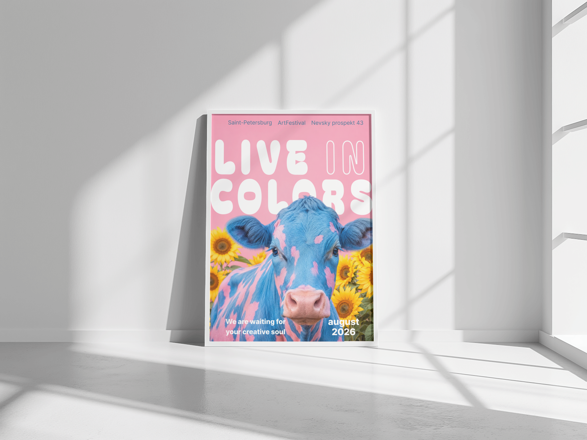
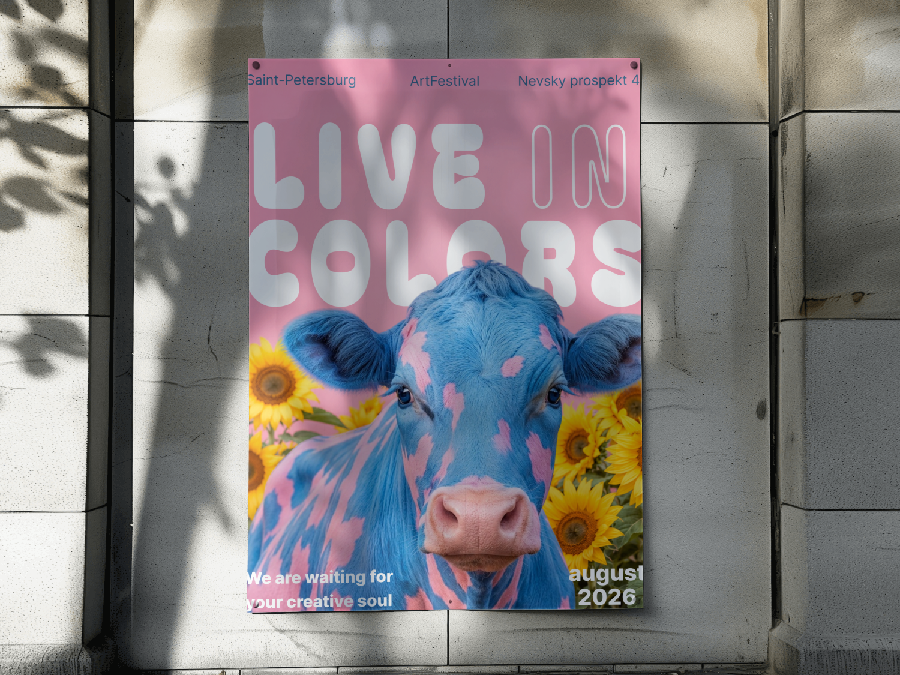
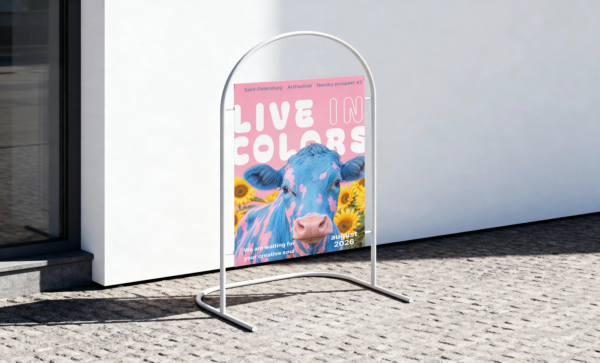

Live in Colors
Афиша фестиваля уличного искусства в Санкт-Петербурге — яркий сюрреалистичный образ вместо предсказуемой городской символики.

- Клиент
- ArtFestival, Санкт-Петербург
- Задача
- Разработать афишу городского арт-фестиваля, которая работает и как уличный постер, и как обложка для соцсетей — должна останавливать взгляд за секунды и не теряться среди типовой рекламы событий.
- Роль
- Графический дизайнер: концепция, композиция, леттеринг, подбор и обработка изображения, подготовка макета под печать и диджитал-форматы.
Фестивали современного искусства часто визуально похожи друг на друга: абстрактные формы, градиенты, безопасная типографика. Задачей было уйти от этого шаблона и предложить образ, который запоминается с одного взгляда — сюрреалистичный, тёплый и немного дерзкий.
В основу лёг контраст: нежный розовый фон и подсолнухи как «уютная», почти открыточная база — и на этом фоне неожиданный персонаж, окрашенный в фирменные цвета фестиваля. Крупный дублирующийся леттеринг («LIVE» заливкой, «IN» контуром, «COLORS» заливкой) держит композицию и работает как самостоятельный графический слой поверх изображения, а не просто подпись к картинке.
Хотелось, чтобы афиша вызывала не «о, ещё один фестиваль», а «что это вообще такое» — и это работает на удержание внимания.



Афиша легла в основу всей коммуникации фестиваля — от уличных ситиформатов до постов в соцсетях — и стала узнаваемым визуальным символом события за счёт нестандартного центрального образа.